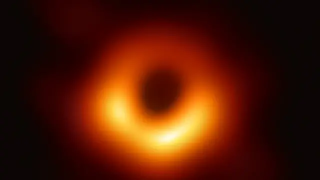
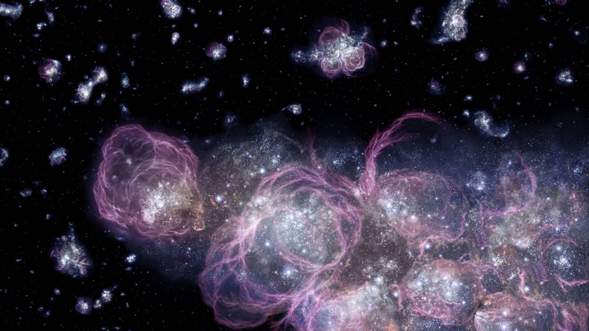
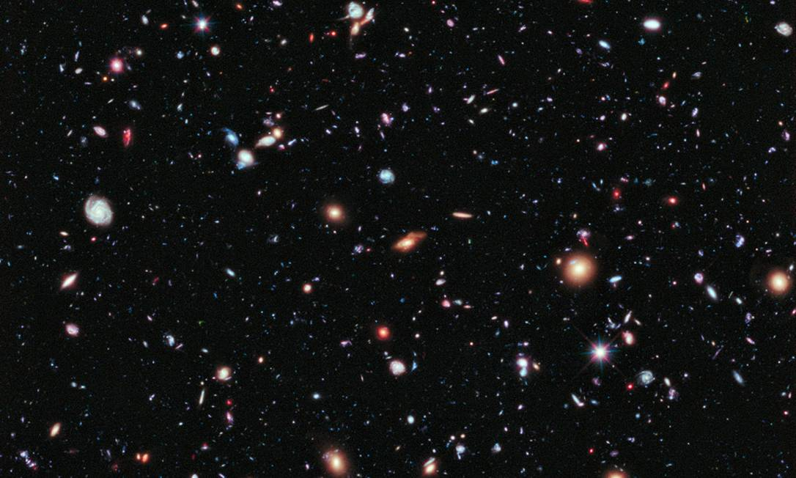
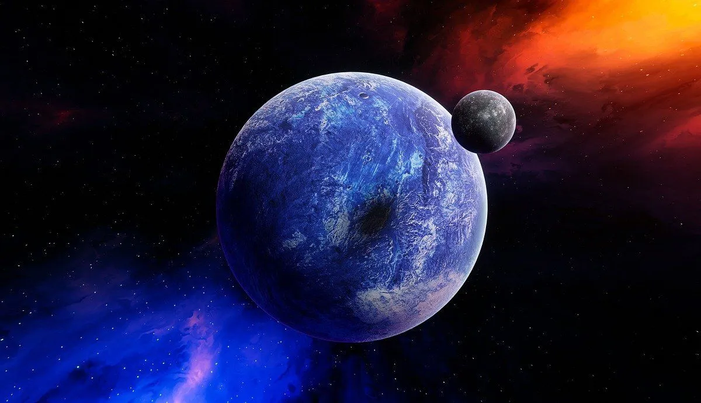

Curiosidades

Buracos Negros: Os Monstros Gravitacionais
Os buracos negros estão entre os objetos mais extremos e intrigantes de todo o cosmos. Eles surgem quando estrelas massivas esgotam todo o seu combustível nuclear e sofrem um colapso gravitacional catastrófico em direção ao seu próprio centro. Como funcionam: A massa da estrela fica concentrada em um ponto de densidade infinita conhecido como singularidade. Ao redor desse ponto existe o horizonte de eventos, que é a fronteira invisível a partir da qual a velocidade de escape excede a da luz. Efeitos ao redor: Embora o buraco negro em si seja invisível por não emitir luz, ele é cercado por um disco de acreção — um redemoinho brilhante de gás superaquecido e poeira que orbita a velocidades próximas à da luz antes de ser engolido, gerando radiações detectáveis pelos nossos instrumentos.

Matéria Escura e Energia Escura: Os Maiores Mistérios do Cosmos
Apesar de todo o avanço da tecnologia e da ciência, o modelo padrão da cosmologia nos diz que conhecemos apenas cerca de 5% de tudo o que compõe o universo. Os outros 95% são formados por duas entidades misteriosas das quais conhecemos apenas os efeitos, mas não a verdadeira natureza. A Matéria Escura (cerca de 27%): Ela não emite, absorve ou reflete luz, tornando-se totalmente invisível aos telescópios ópticos. No entanto, os cientistas sabem que ela existe devido à sua forte atração gravitacional, que atua como uma "cola" invisível impedindo que as galáxias girem rápido demais e se desintegrem. A Energia Escura (cerca de 68%): É uma força repulsiva misteriosa que permeia todo o espaço e atua no sentido oposto à gravidade. Enquanto a gravidade tenta puxar as coisas para perto, a energia escura está acelerando a expansão de todo o universo em uma taxa cada vez maior.

A Imensidão do Universo e o Campo Ultraprofundo do Hubble
Para compreender a verdadeira escala do universo, o Telescópio Espacial Hubble realizou um dos experimentos visuais mais ousados da história científica: apontou sua lente para uma região do céu aparentemente completamente vazia e escura, do tamanho de um grão de areia mantido à distância de um braço esticado, e deixou o obturador aberto por semanas acumulando luz. O resultado: O que parecia ser um pedaço de nada revelou conter quase 10.000 galáxias de todos os tamanhos, formatos e idades, situadas a bilhões de anos-luz de distância. Viagem no tempo: Como a luz leva tempo para viajar pelo espaço, olhar para essas galáxias distantes significa olhar para o passado — estamos vendo como elas eram há bilhões de anos, durante os estágios iniciais de formação do universo. Isso demonstra que existem trilhões de galáxias espalhadas pelo cosmos observável.

Exoplanetas e a Busca por Mundos Habitáveis
Durante séculos, os astrônomos conheciam apenas os planetas do nosso próprio Sistema Solar. No entanto, nas últimas décadas, a detecção de exoplanetas (planetas que orbitam outras estrelas fora do nosso sistema) revolucionou a astronomia moderna. Diversidade cósmica: Já foram descobertos milhares de exoplanetas com características surpreendentes. Existem "Júpiteres quentes" (gigantes gasosos colados às suas estrelas), mundos cobertos inteiramente por oceanos globais, planetas onde chove vidro de lado e super-terras rochosas maiores que o nosso planeta. A Zona Habitável: O foco principal dessa busca é encontrar mundos na chamada "zona habitável" (ou zona Cachinhos Dorados) — a distância exata de uma estrela onde as temperaturas não são nem quentes demais nem frias demais, permitindo a existência de água líquida na superfície, o ingrediente fundamental para a vida como conhecemos.